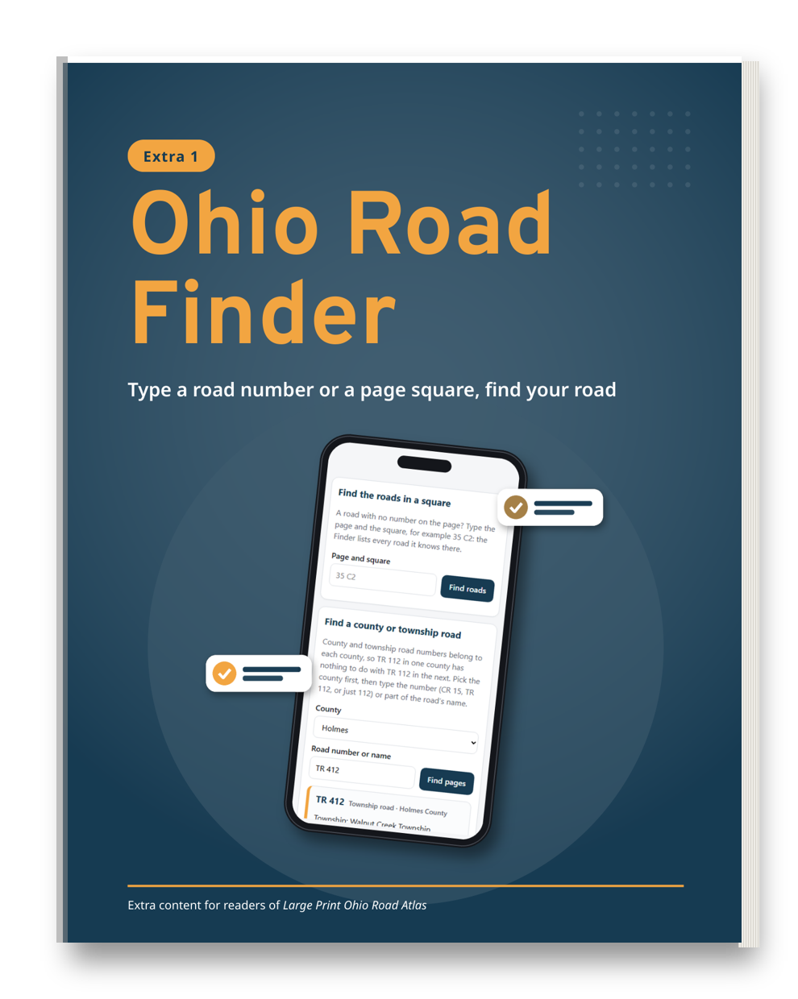
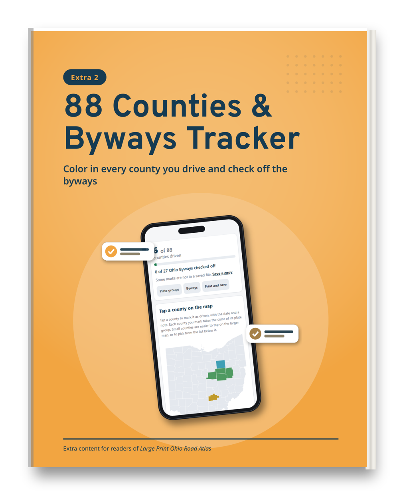
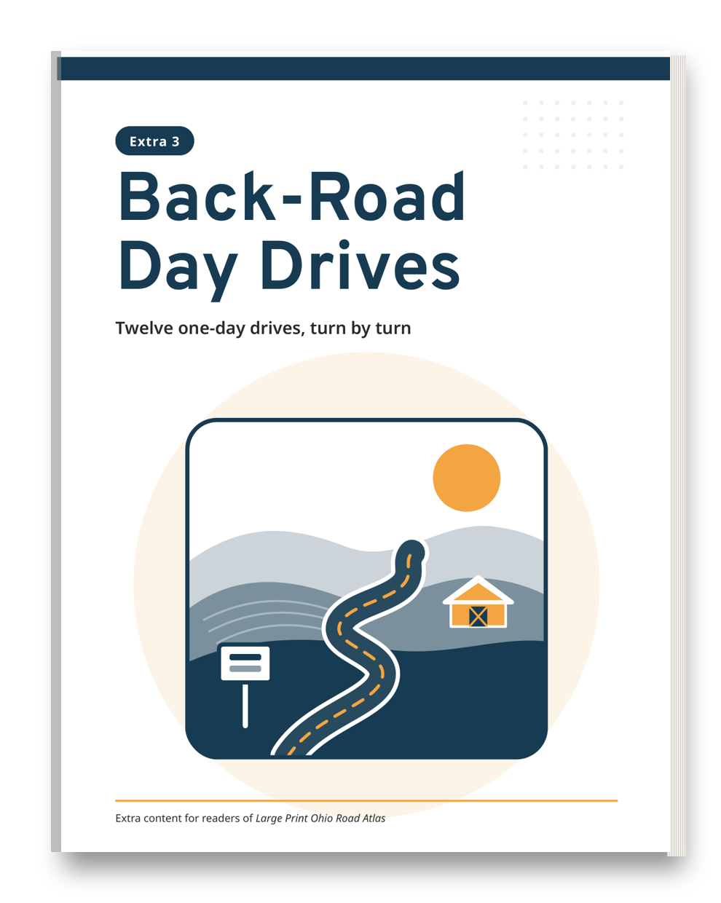
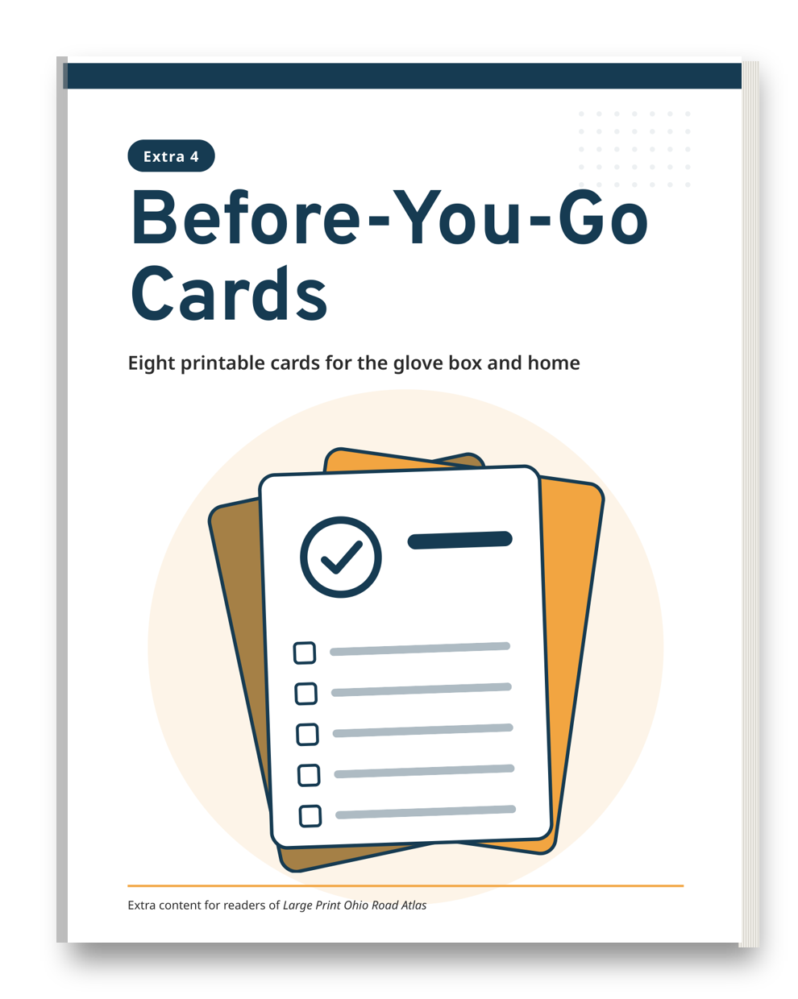
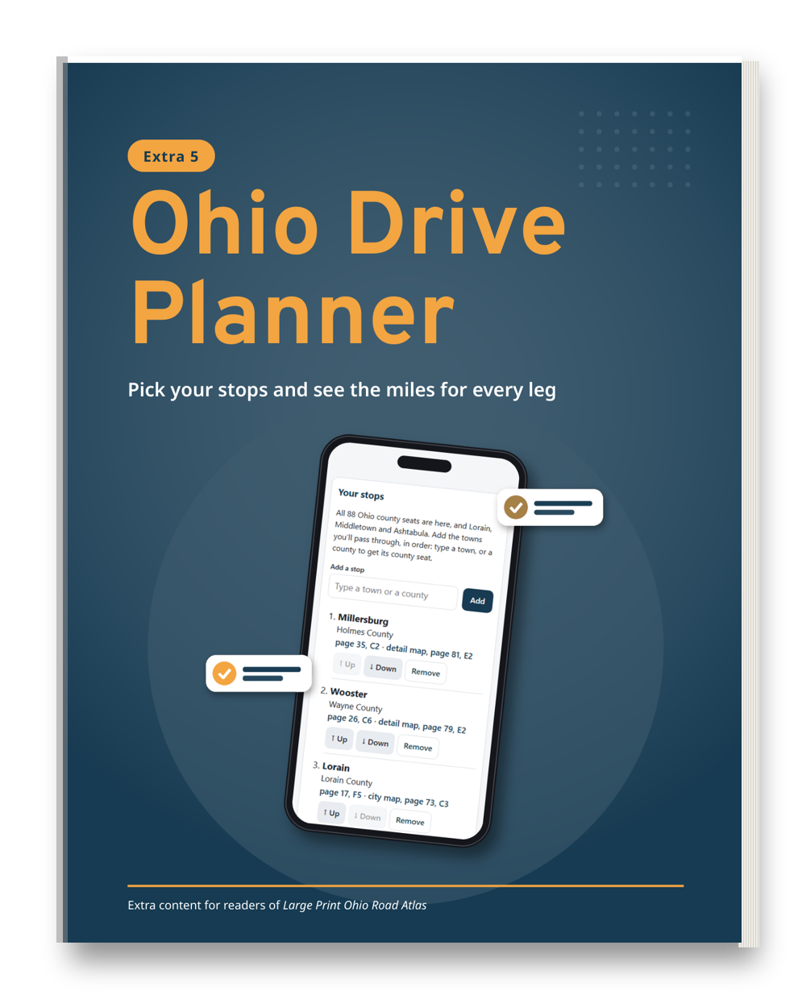
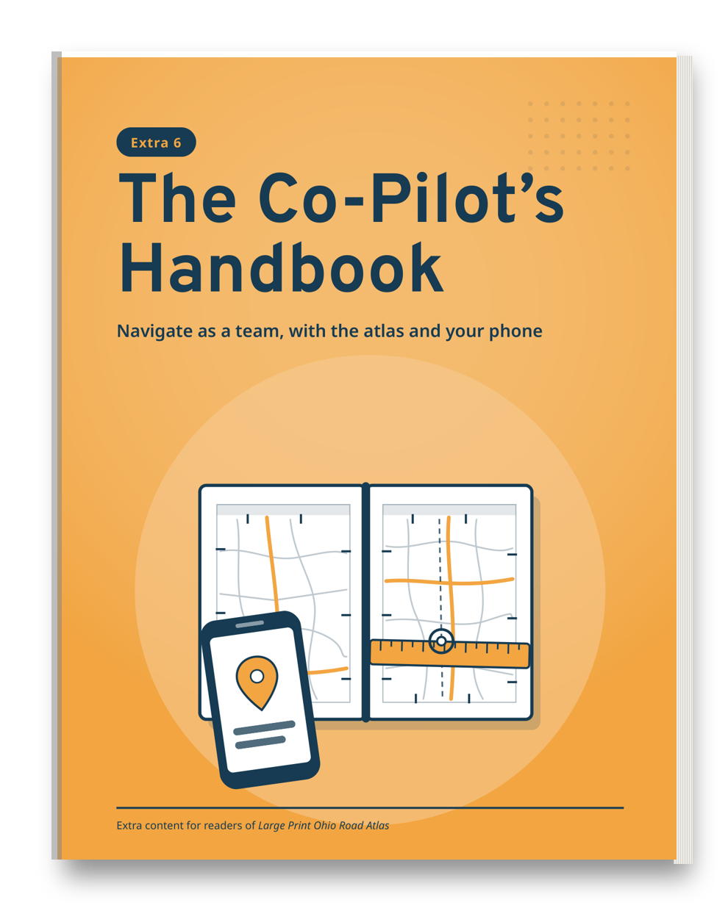

1. Ohio Road Finder
Type any county or township road number and see the atlas page and square where it runs. Or type a page and square to list the roads there.
Open
2. 88 Counties & Byways Tracker
Color in every Ohio county you’ve driven and check off the byways, with the date, and watch the count grow.
Open
3. Ohio Back-Road Day Drives
Twelve one-day drives on Ohio back roads, turn by turn, with the atlas pages to follow.
Download
4. Before-You-Go Cards for Ohio Back Roads
Print them, keep them in the glove box, and leave one at home with your route.
Download
5. Ohio Drive Planner
Pick your stops among all 88 county seats and see the miles for every leg, with the atlas page for each stop.
Open
6. The Co-Pilot’s Handbook
How to navigate as a team with the atlas and your phone, and find your spot on the page from your phone’s coordinates.
Download